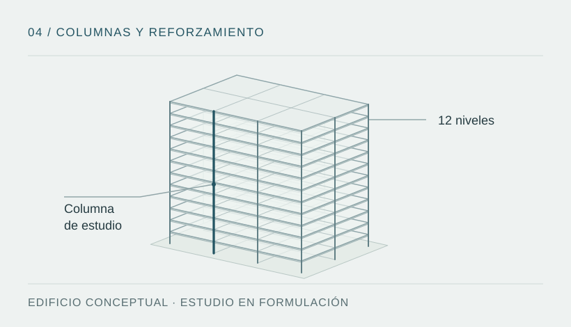

Problema técnico y objetivo
La evaluación posterior a un sismo y la intervención preventiva requieren comparar alternativas de reforzamiento según su incidencia en rigidez, resistencia, deformabilidad y ductilidad. El efecto local en una columna debe relacionarse con las hipótesis de respuesta del edificio.
Objetivo propuesto: delimitar un conjunto manejable de escenarios numéricos para estudiar columnas representativas de edificaciones de concreto armado de hasta 12 pisos y comparar estrategias de refuerzo local.

Diseño metodológico propuesto
- Definir columnas y configuraciones estructurales representativas dentro del límite de altura planteado.
- Comparar alternativas de encamisado y refuerzo con CFRP frente a una condición de referencia.
- Plantear un estudio paramétrico de variables controladas, incluyendo resistencia del concreto y nivel de demanda.
- Explorar tendencias e indicadores con un programa numérico alcanzable, sin incluir ensayos físicos propios en el alcance actual.
Herramientas por definir
Se prevén un entorno de modelación estructural y herramientas de tratamiento de datos. La elección del software, los modelos constitutivos y los procedimientos de análisis forma parte de la formulación; no se atribuye todavía una implementación en ETABS, SAP2000 u OpenSeesPy.
Procedimiento previsto
- Delimitar la pregunta: definir indicadores, condiciones de comparación y qué efectos quedan fuera del estudio.
- Construir la matriz de casos: fijar geometrías, propiedades de materiales, condiciones de borde y alternativas de refuerzo.
- Seleccionar y contrastar modelos: justificar leyes constitutivas, demanda sísmica y estrategia de validación con referencias documentadas.
- Ejecutar el estudio paramétrico: controlar una variable por comparación cuando sea posible y registrar sensibilidad y convergencia.
- Interpretar los resultados: separar tendencias locales de efectos globales, identificar límites y documentar incertidumbre.
Estas etapas son una propuesta de trabajo; no indican que los análisis hayan sido ejecutados.
Estado actual y evidencia
La investigación se encuentra en definición metodológica. Están pendientes las geometrías, el modelo constitutivo, la demanda sísmica, la validación y las restricciones finales. No hay resultados numéricos definitivos que presentar.
| Disponible | Pendiente de desarrollar |
|---|---|
| Pregunta inicial y alcance tentativo hasta 12 pisos. | Protocolo de investigación, hipótesis contrastables y selección de casos. |
| Alternativas de refuerzo propuestas. | Bibliografía, modelos, parámetros y estrategia de validación. |
| Ilustración conceptual del alcance. | Archivos de cálculo, resultados, análisis de sensibilidad y conclusiones. |
Competencias que busca desarrollar
Formulación de preguntas de investigación, diseño de comparaciones paramétricas, selección crítica de modelos y evaluación de incertidumbre. Son objetivos de desarrollo de la propuesta, no resultados ni experiencia profesional acreditada.